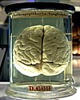

brain

Definition: A brain is an organ that serves as the center of the nervous system in all vertebrate and most invertebrate animals. It is located in the head, usually close to the sensory organs for senses such as vision. It is the most complex organ in a vertebrate's body. In a human, the cerebral cortex contains approximately 14–16 billion neurons, and the estimated number of neurons in the cerebellum is 55–70 billion. Each neuron is connected by synapses to several thousand other neurons. These neurons typically communicate with one another by means of long fibers called axons, which carry trains of signal pulses called action potentials to distant parts of the brain or body targeting specific recipient cells.
Source: Wikipedia
Wikipedia Page (Something wrong with this association? Let us know.)
Wikidata Page (Something wrong with this association? Let us know.)
Occurs in: